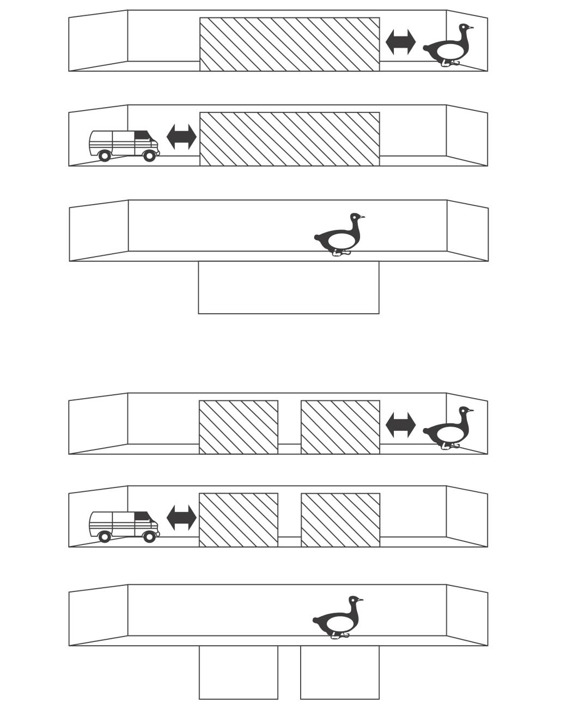
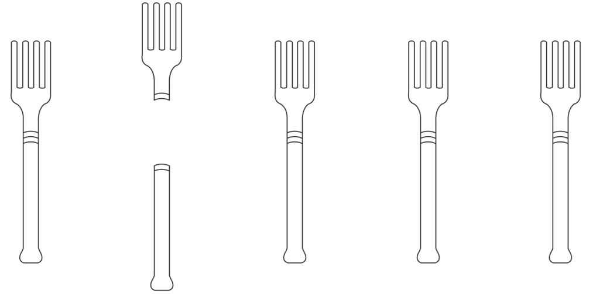

我希望这些实验能够让读者相信幼儿拥有对数字的自然天赋。但是，这并不意味着应该让蹒跚学步的儿童报名参加业余数学课程。如果你的孩子在基础加法运算中出现了很大的错误，我也不会建议你去咨询儿童神经科医生。如果那些冒充内行者将我对皮亚杰理论的反驳用作托词，宣称他们能够在孩子出生后的第一年提升其智力，方法是向婴儿展示其根本无法理解的阿拉伯数字甚至日语假名写成的加法算式，那么，我将非常遗憾。虽然幼儿确实拥有数学能力，但是这种能力仅局限于最基础的算术。
第一个局限，婴儿的精确运算范围似乎不会超过数字3，或许还有4。实验者向婴儿呈现2个或3个对象时，婴儿每次都能够区分二者。可是，他们只能偶尔区分3个对象和4个对象，而且没有任何1岁以下组的儿童能够将4个点和5个点或者6个点区分开来20。显然，婴儿只对最开始的几个数字有精确的认识。他们在这一领域所表现出的能力很可能低于成年黑猩猩，因为在6块巧克力和7块巧克力之间进行选择时，成年黑猩猩的正确率高于随机水平。
我们也不能太快得出“数字4就是婴儿算术能力的极限”的结论。目前已有许多实验关注了婴儿对较小整数的精确表征，但是，就像老鼠、鸽子和猴子一样，婴儿很可能仅对数字拥有粗略的连续的心理表征。这种表征方式同样符合在老鼠和黑猩猩身上发现的距离效应和大小效应。因此，我们应该认为，在超出一定范围之后，婴儿不能够区分数字n和它的相邻数n+1。这一现象确实已在比4大的数字中发现。但是，假如他们能够区分距离足够大的数字，我们也应该期待他们能区分在这个范围之外的数字。因此，婴儿可能不知道“2+2”的结果是3、4，还是5，但是当他们发现一个场景显示“2+2=8”时，他们仍会感到惊讶。据我所知，这个预测还没有被实验证实21。一旦它被证实，将会大幅度拓展我们在幼儿数字方面的认知。
婴儿的数学能力还有第二个局限。在一些成人可以自发推测物品数量的场景中，婴儿不一定会得出相同的结论。我来解释一下。假如你看到1辆红色玩具卡车和1个绿色的球交替从遮屏后出现，你会立即得出遮屏后藏着2件物品的结论，当遮屏被打开，你发现只有1件物品，假设那是1个绿球，此时，你会非常困惑。婴儿的表现却不同。无论遮屏打开后出现1件还是2件物品，10个月大的婴儿都不会有任何惊讶的表现22。显然，对婴儿来说，不同形状和颜色的物品交替地从遮屏后出现不是一个能够提示存在多件物品的充分线索。即便实验材料换成了他们相当熟悉的物品，比如被试自己的水壶或他们最喜欢的洋娃娃，他们仍然不能通过测试。直到12个月大时，婴儿才开始预期遮屏后有2件物品。即便是在这个时候，也只有当物品的形状不同时，他们才能通过测试。如果只是颜色或大小发生改变，比如1个大球从遮屏一侧出现之后又有1个小球从遮屏另一侧出现，就算是12个月大的儿童也不能推测出遮屏后有2件物品。
唯一决定性的线索是客体的轨迹（见图2-4）23。在使用中间有间隔的两个遮屏重复同样的实验时，如果同一个客体交替地从右侧遮屏和左侧遮屏后出现，婴儿会推测存在2个客体，每个遮屏后各有1个。他们知道，一个客体从右侧遮屏后移到左侧遮屏后时，它不可能不在遮屏间的空隙中出现，哪怕只出现很短的时间。如果该客体在适当的时间内确实出现在了这段空隙中，婴儿的选择会转变，他们会认为只有1个客体。相反，如果只有一块遮屏，实验开始时同时向婴儿呈现2个客体，即使只呈现很短的时间，他们也会期望最终可以找到2件物品。

在上图的情境中，1只鸭子和1辆玩具卡车交替地出现在遮屏的右侧和左侧。尽管客体本身发生了改变，但是遮屏落下后，婴儿并没有对遮屏后只有1件物品感到奇怪。在下图的情境中，遮屏之间有一段空隙，如果1件物品从右端移动到左端，就不可能不出现在空隙中。在这种情境下，如果物品交替地从右侧遮屏和左侧遮屏后出现，且没有在遮屏的空隙中出现，此时，婴儿会认为存在2件物品，当遮屏落下后，如果只看见1件物品，他们会感到惊奇。
图2-4 婴儿根据客体的轨迹而非客体的特性来估计数量
资料来源：改编自Xu & Carey, 1996。
物体的空间轨迹信息确实为数字知觉提供了关键线索。需要注意的是，这个结论并没有驳倒我之前所提到的转盘实验。转盘实验证明，婴儿并不在意遮屏后的物体是运动的还是静止的。事实上，我们有理由相信，在这项实验中，轨迹信息同样是十分关键的。比如在“1+1=2”的情境下，第一个米老鼠玩具被放置在遮屏后的转盘上之后，一个同样的玩具出现在遮屏右侧实验者的手中。这个玩具不可能是前一个玩具，因为前一个玩具不可能在不被看到的情况下从遮屏后被移走。因此，婴儿们得出结论，这是表面上与前一个玩具一模一样的第二个玩具，所以他们会预期存在2件物品。即使物品随后被移动，且它们的位置无法预测，这些并不重要，一旦“2”这一抽象表征被激活，它就能够抵制这类变动。离散物体位置的空间信息对于儿童在大脑中建立数字表征十分关键，但是一旦数字表征被激活，他们就不再需要此类信息了。
总的来说，婴儿对数量的推测似乎完全由客体的空间轨迹决定。如果他们看到的动作在不违背物理法则的条件下不可能由单个客体完成，那么他们就会得出至少存在2个客体的推论。否则他们就会坚持存在1个客体的默认假设，即便这种假设意味着这个客体在形状、大小和颜色方面会不断地产生变化。由此可见，婴儿的数量加工模块对客体的轨迹、位置和被遮挡情况高度敏感，同时他们会完全忽视形状和颜色的改变。婴儿从不在意客体本身的特性，对于他们来说，只有位置和轨迹才是真正重要的。
只有一个非常愚蠢的侦探才会忽视半数的可用线索。既然我们已经习惯于婴儿的高水准表现，那就不得不思考，这种策略是否并不像看起来那么缺乏智慧。婴儿的推理线是有缺陷的吗，或者与此相反，他们像福尔摩斯一样有智慧？毕竟每个人都知道，一个罪犯可以将他自己装扮成其他人，客体外表的变化也属于这种情况。比如，人脸的不同侧面是不同的视觉客体，但是婴儿会将它们视作同一个人的不同形象。既然一小片红色的橡胶可以在充气后变成一个粉色的大气球，儿童又怎么可能事先肯定一辆卡车不能将自己变成一个球呢？这种信息是不能够提前知道的，它必须通过不断遇到新的客体而一步步习得，而且在认识某物之前，最好不要有先入为主的偏见。这也许能够解释为什么婴儿会做出只有1件物品的假设。像优秀的逻辑学家一样，即便看到了物品形状和颜色的奇怪改变，他们也会坚持这种假设，直到有明确的证据能够证伪。
从进化的观点来看，自然将算术建立在了最基本的物理法则之上。人类的“数感”至少利用了3条法则。第一，1个客体不可能同时占据多个分散的位置。第二，2个客体不能占据相同的位置。第三，1个客体不可能突然消失，也不可能在原本空空如也的位置上突然出现，它的轨迹应当是连续的。非常感谢儿童心理学家伊丽莎白·斯佩尔克和勒妮·巴亚尔容（Renée Baillargeon），她们发现，即便是年龄非常小的儿童，也能够理解这些法则24。但是，在我们的物质世界中的确也存在着极少的例外，这其中最为人们熟知的例外是由影子、反射和透明度所引发的。这或许能够解释当这些“物品”出现在幼儿面前时他们所表现出的着迷和困惑。正是这些基本法则为动物和人类大脑中天生就具有的少量数字理论提供了坚定的基础。婴儿的大脑只能依靠这些法则来预测会出现几个物品，他们固执地拒绝利用其他附属线索，比如物品的视觉外观。这就证明了婴儿“数感”的古老，因为只有经过几百万年试误的进化才能够区分物品的基本性质和特殊性质。
事实上，离散物品和数字信息的紧密联系会一直持续到较晚的年龄阶段，这会对数学能力发展的某些方面产生负面的影响。如果你认识一个三四岁大的儿童，你可以尝试进行下面这个实验25。当你向他展示图2-5时询问他能够看见几把叉子。你会惊奇地发现他会得出错误的总数，因为他把叉子的每一部分都计算为1件。他将那把断掉的叉子算了2次，所以得出6把这个结果。很难向他解释分开的两部分应当被看作1件。与此类似，你可以向他展示2个红色的苹果和3根黄色的香蕉，问他看见了几种不同的颜色，或者有几种不同的水果。显然，正确的答案是2。但是，在这个年龄阶段，儿童会不由自主地将每个离散的客体计作1件，从而得出错误的总数“5”。“数字是离散物品集合的属性”这句话已经深深印刻在他们的大脑中。

3岁至4岁的儿童认为，这一集合包含了6把叉子。他们一定会将每1个独立物品计为1个单位。
图2-5 叉子的数量
资料来源：Shipley & Shepperson, 1990。